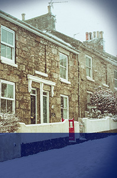
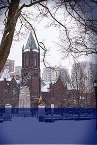
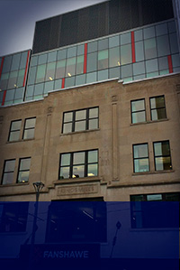

London Arch
ENJOY LONDON'S ARCHITECTURE HISTORY
Walking Guide to Historic Sites in London Ontario Canada The Historic Sites Committee of the London Public Library Board identifies and marks historic buildings, places, and people of local significance.
Architecture
Middlesex
Middlesex County Court House
University of Western
University of Western
St Peter's Basilica

St Peter's Basilica
Kingsmill's builging
Kingsmill's builging